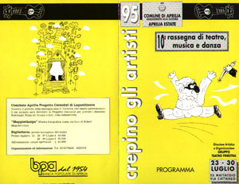
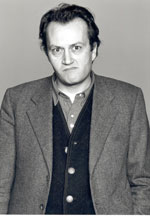
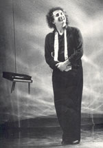

|  |
10° RASSEGNA NAZIONALE TEATRO
APRILIA 23-30 LUGLIO 1995
EX MATTATOIO VIA CATTANEO
PROGRAMMA
23 LUGLIO ORE 21,30
Compagnia di Paolo Rossi
“RANDELLO, DERATIZZO…ERGO SUM” con Maurizio Dilani e Bebo Storti.
Regia di Giampiero Solari
|  |
| Bebo Storti |
24 LUGLIO ore 21
CONCERTO AL MATTATOIO:
Perturbatio Mentis (Funky): Andrea Bornago (Voce), Bocio Massimo (Voce), Daniele Cardoni (Chitarra), Vincenzo Lombardi (Chitarra), Marco Cordoni (Basso), Mauro Iadanza (Batteria) Nomidia Butsedia (New Wave): Flora Colacurcio (Voce), Diego Aalfonsi (Basso), Daniele Cardoni (Chitarra), Mauro Iadanza (Percussioni) Duodeno (Rock italiano): Gabriele (Voce), Massese (Chitarra), Dario (Chitarra), Gambero (Batteria), Gnomo (Basso).
25 LUGLIO ore 21,30
SERATA FUTURISTA. Omaggio a Filippo Tommaso Martinetti. Poesi e versi interpretati da: Angela Cerreti, Marithèe Giudice.
Produzione “Gruppo Teatro Finestra”
Allestimento scenico: Gruppo “Scuola d’Arte Mediterranea”, Ass. Cult. “Novecento”
26 LUGLIO ore 21
SUONI TRA I RUMORI
Unidade (World Music) in concerto.
Ass. Senza Confine - C. S. A. Camarillo Brillo
27 LUGLIO ore 21,30
LE MEMORIE DI UN PAZZO di N. V. Gogol
Adattamento e regia di Enzo Provenzano
28 LUGLIO ore 21,30
NOVECENTO di Alessandro baricco
Con Eugenio Allegri
Regia di Garbriele Vacis
Produzione Laboratorio Teatro Settimo
|  |
| Eugenio Allegri |
29 LUGLIO ore 21
DANZA & MUSICA
Ore 21 Dimostrazione Danza Classica e Moderna insegnante coreografa Roberta Pedini
Ore 22 Scuola Civica di Musica Città di Aprilia
“Serata di canto moderno” con F. Polese (Tastiere), A. Clemente (Chitarra), M. Sgarra (Basso), L. Vaccaio (Voce), L. Raffaelli (Voce), I. Pisciottani (Voce), A. Sabella (Voce).
30 LUGLIO ore 21,30
NEBBIA IN VALPADANA con Paolo Hendel. Con la collaborazione di Piero Metalli.
Durante il periodo della rassegna sarà in funzione uno spazio gastronomico il cui incasso sarà devoluto al Progetto Cernobyl per aiutare i bambini Bielorussi, Russi ed Ucraini colpiti dalla Radioattività.
Mostra fotografica tratta dal libro di Robert Mapplethorpe.